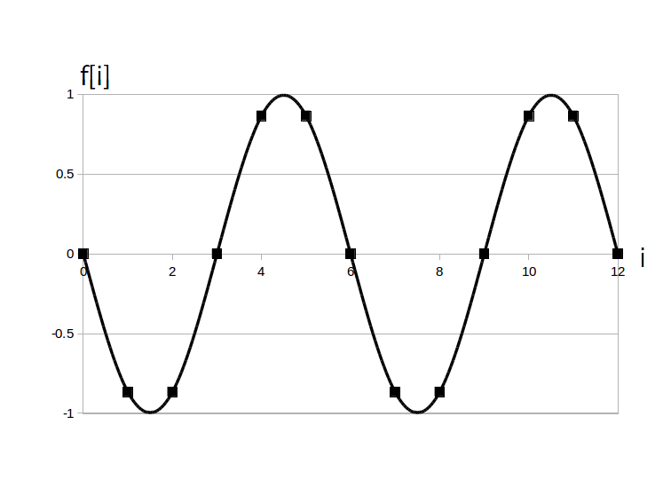

前ページの表より、位相 $\phi$ がぴったり $\pi$ [rad] 進んでいる場合と $\pi$ [rad] 遅れている場合は周期の半分(つまり $\textrm{T}_d/2$ [点])だけ等しく平行移動します。
このように $\phi = \pm\pi$の時、「時間領域ディジタルサイン波の位相が反転している」と言って、元の(初期位相 $0$ の)ディジタルサイン波が上下反転したグラフになります。
例えば次の図1は $a=1$、$\textrm{T}_d = 6$、$\phi= 0$、$i=0,1, \cdots, 12$ の時の時間領域ディジタルサイン波(sin関数版)のグラフです。
次の図2は $a=1$、$\textrm{T}_d = 6$ は同じですが $\phi= -\pi$とした時のアナログサイン波で、確かに上下が反転していることが分かります。

なお、位相反転は振幅 $a$ の符号を反転させることと同じ意味です。
例えば次の図3は $a=-1$、$\textrm{T}_d = 6$ 、$\phi= 0$とした時のアナログサイン波で、図2と同じく上下反転しています。